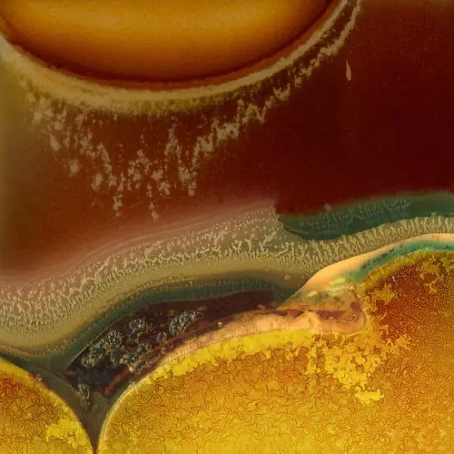

Richard Earney
Richard is an abstract landscape photographer.
He is a Fellow of the Royal Photographic Society and a member of London Independent Photography.
His work primarily unfolds in series rather than standalone images, exploring the interplay of time, motion, color, and light within the still image.
Exhibitions
- London Independent Photography Crouch End group, 2025, The Original Gallery, London
- London Independent Photography 36th Annual Exhibition 2025, Espacio Gallery, London
- London Independent Photography Crouch End group, 2024, The Original Gallery, London
- London Photo Show 2023, Bargehouse Gallery, Oxo Tower
- London Independent Photography Crouch End group, 2023, The Original Gallery, London
- Through a Different Lens, Sullen Riot Curation in association with Jupiter Asset Mananagement Ltd
- #Connected 2021
- #Connected 2020: Re-Connected
- LIP Chronicles: Life Under Lockdown 2020
- London Photo Show 2019, Bargehouse Gallery, Oxo Tower
- London Independent Photography Crouch End group, 2019, Ply Gallery, London
- London Independent Photography LIP 31 Exhibition 2019, Espacio Gallery (selected by Laura Noble, Tom Hunter, Philip Grey; curated by Colleen Rowe Harvey)
- On Landscape, Meeting of Minds 2018 Community Exhibition
- London Independent Photography LIP 30 Exhibition 2018, Espacio Gallery
- #Connected 2018, Patching’s Gallery, Nottinghamshire
- #ConnectedTen, Patching’s Gallery, Nottinghamshire
- RPS Biennial 2017, Shire Hall Gallery, Stafford, Hull International Photo Festival, Royal Albert Hall
- On Landscape, Meeting of Minds 2016 Community Exhibition
- International Photobook Exhibition 2016, Espacio Gallery, London
Books
- The Prismatic Pond, 2022
- Warped Topographies II, 2020 (can also be viewed at Biblioscapes)
- Warped Topographies, 2018 (can also be viewed at Biblioscapes)
- Inside Lightroom 2: The serious photographer’s guide to Lightroom efficiency, 2012
Awards and Positions
- Selector: Stephen H. Tyng Collection 2018/19
- Fellow of the Royal Photographic Society (FRPS) 2017
- Associate of the Royal Photographic Society (ARPS) 2014
- Licentiate of the Royal Photographic Society (LRPS) 2004
Articles
- fLIP issue 60, Spring 2025 - The Sideways Issue
- Royal Photographic Society Visual Art Magazine 157, Jan 2020
- Endframe, On Landscape Magazine, Dec 2019
- Featured Photographer, On Landscape Magazine, Oct 2018
- Royal Photographic Society, RPS Journal, Fellowship Special, Jan 2018
- Royal Photographic Society Distinctions Panel, 2017
- Pryme Magazine, Happy Accidents, 2017
- On Landscape Magazine, Warped Topographies, 2017
- Inside the Outside, Warped Topographies, 2017
- On Landscape Magazine, 4x4, Abstract Grasses, 2016
- On Landscape Magazine, Hipstamatic Landscape Photography, 2011
Talks
- Find Your Voice July 2023, Realistic Abstraction
- London Independent Photography May 2023, Journeys into Abstration
- On Landscape, Meeting of Minds 2018, Overcoming Creative Blocks
- RPS Southern Region 2018, On Turning Away
- Magdelane College, Cambridge Festival of Sound, The User Experience of Music Recognition
Podcasts
- Biblioscapes: In Discussion Episode 113 (The Prismatic Pond)
- Biblioscapes: In Discussion Episode 3 (Warped Topographies)